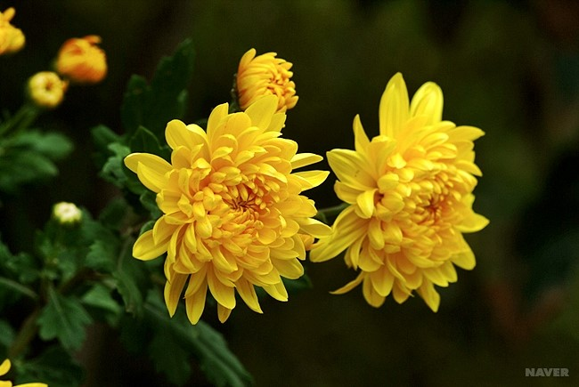

조선시대에는 꽤 비싼 값에 팔렸던 모양인지, 정약용이 유배 중 자식에게 보내는 편지 중에는 국화 한 이랑만 팔아도 몇 달치 식량을 살 수 있다고 말하는 구절이 있다

국화는 관상용으로 널리 재배되므로 원예품종이 많다. 높이 1 m 정도로 줄기 밑부분이 목질화하고, 잎은 어긋나고 깃꼴로 갈라진다. 꽃은 두상화로 줄기 끝에 피는데 가운데는 관상화, 주변부는 설상화이다. 설상화는 암술만 가진 단성화이고 관상화는 암·수술을 모두 달고 있는 양성화이다.